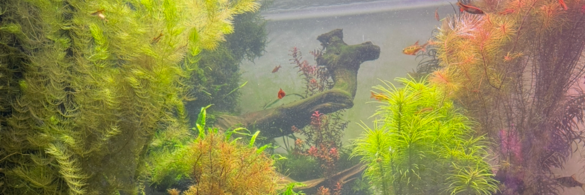

Entry #5
I read Game Design UX Best Practices by Amir Dori for this week’s learning journal and was able to learn a few interesting game mechanics. There were some small things that I may add to my Game On! Project. Something that I would like to add to my game is to add a “close” button to my pop-ups instead of an “X” so that users are encouraged to pay more attention the information in the pop-up. The article states that the “X” is often associated with annoying pop-ups so I do not want to replicate that particular vibe. I also think including sliders is a smart way to add more content without having to switch between screens. It allows game designers to make the most use of the limited screen size they are given. This article gave me an opportunity to expand my knowledge on what game design is truly like and how different it is from designing regular websites.